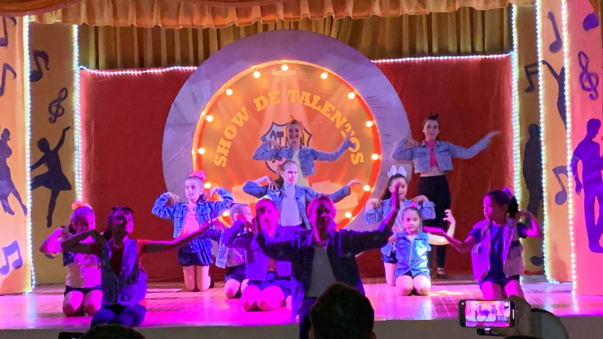

14 de abril de 2023
Apresentação no aniversário do patronato

Oi pessoal, aqui foi minha primeira apresentação de ballet depois que me mudei de Fortaleza aqui para Viçosa do Ceará, foi uma apresentação bem prazerosa, apesar de meus pais terem se estressado, porque prometeram que seriamos a terceira apresentação, mas fomos quase a última, já que o maior público do espetáculo eram os pais das bailarinas a escola mudou a sequência para não esvaziar os bancos após nossa apresentação. Estava bem nervosa por ser minha primeira apresentação, mas fluiu melhor do que eu esperava, eu tinha aprendido a coreografia a risca, eu deixo vocês tirarem suas próprias conclusões após assistirem. Eu agradeço a visita e espero que possamos nos ver em outras apresentações.
12 de maio de 2023
Apresentação no Circula Ceará
Oi pessoal, estou aqui mais uma vez com vocês falando um pouco sobre minha apresentação no Circula Ceará, pensei que seria muito difícil, pois nunca tinha apresentado em frente a tante gente, ela ocorreu no anfiteatro da praça Clóvis Beviláqua(praça matriz), como eu dizia foi um momento de muito entusiasmo e nervorsismo, eu gostaria de ter participado em mais partes da coreografia, mas como estou a pouco tempo nessa escola de dança a minha professora achou melhor não arriscar a me passar muita informação e acabar eu me atrapalhando, foi tudo muito lindo e aconteceu que apresentei graciosamente linda(palavras de meu papai rsrsrs). Deixo com vocês a apresentação para se divertirem pelo menos uma fração do que me diverti, agradeço a visita de vocês e nos vemos novamente, beijos!